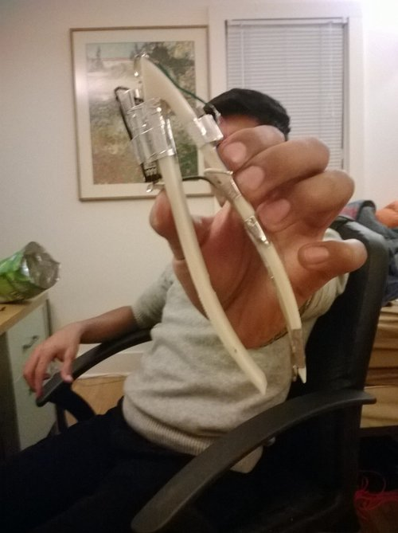
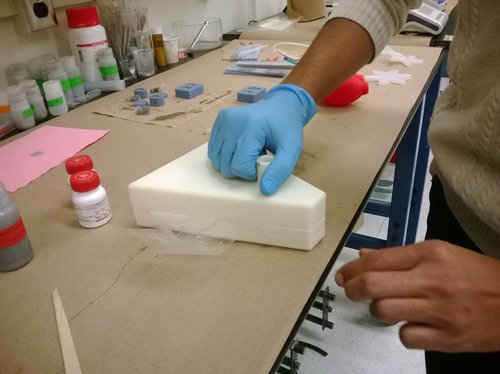
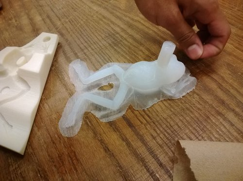
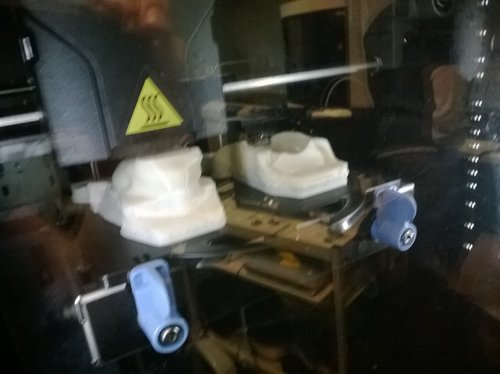
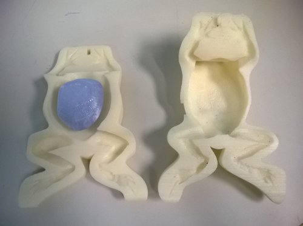
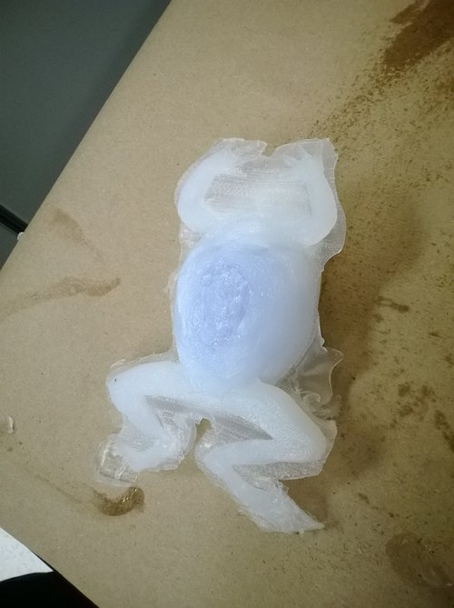
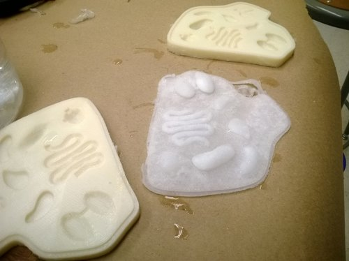
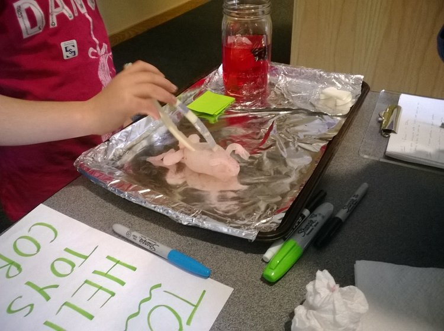
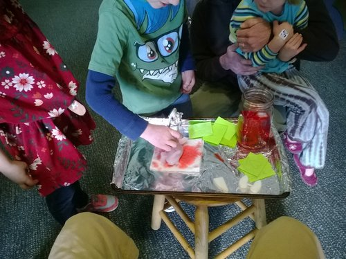

Flopper the Frog, novel use of foamed silicones for a children's toy
Teammates:
Alex Krolick, Sam Daly
Professor:
Robert Shepherd
Summary
My favorite project at Cornell, Flopper the Frog was a game we designed as a 21st century take on Hasbro’s Operation. Flopper was a silicone frog body with spongy silicone organs we prototyped using novel techniques involving 3D printed (FDM) molds and modified silicones from Dr. Shepherd’s research. The game concept was to follow instructions on our website, flopperthefrog.com, and remove organs, as instructed by a series of clues about the frog’s body. Unlike in Operation where the board, i.e. human, was the contact point - the tweezers themselves buzzed in hand when too much force was applied in tweezing out the organs. The fully functional game was demoed at various toy stores and the Science Center in Ithaca, NY. All the children who played the game were very receptive of it, the team felt the game was a total success, and likely market viable.
Photos
 Fig. 1: Tweezer prototype, if an organ was squeezed too hard it would vibrate (me in the background)
 Fig. 2: Molding Rev1 frog, significant excessive material on print
 Fig. 3: Rev1 frog, chest cavity much too small
 Fig. 4: Printing out the Rev2 frog mold, material reduced mold
 Fig. 5: Rev2 mold
 Fig. 6: Casting Rev2 mold
 Fig. 7: Organs molded with salt to guarantee porosity
 Fig. 8: Tweezing out organs from frog mold, demo at Ithaca Science Center
 Fig. 9: Another angle of demo